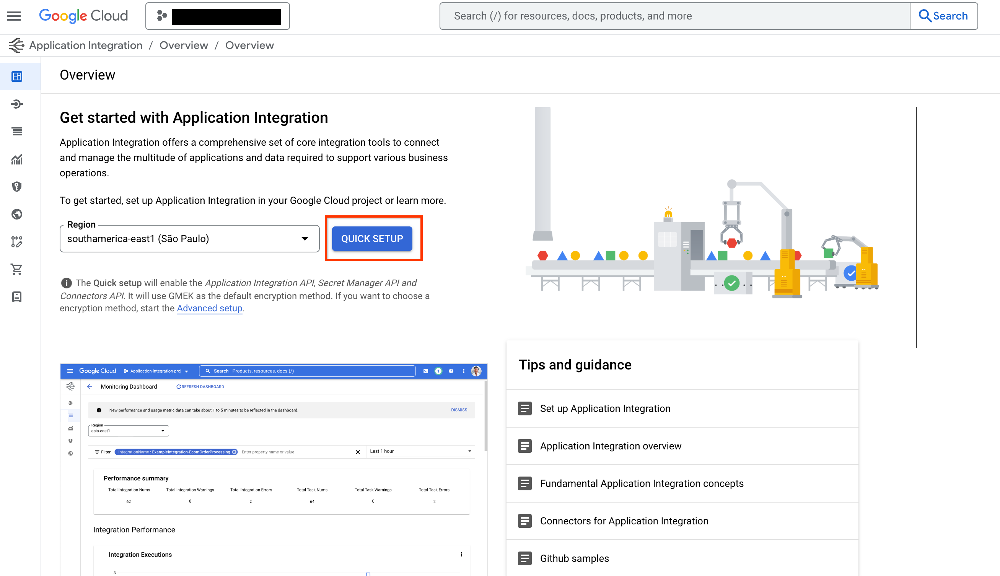
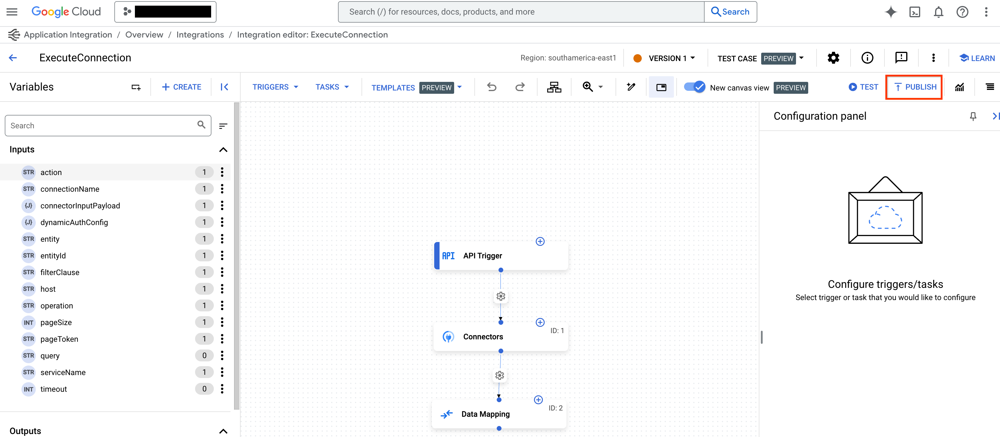
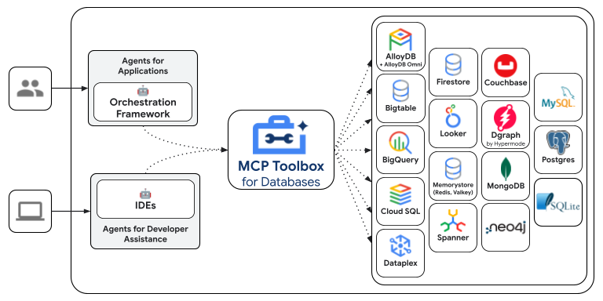

Google Cloud Tools¶
Google Cloud tools make it easier to connect your agents to Google Clouds products and services. With just a few lines of code you can use these tools to connect your agents with:
- Any custom APIs that developers host in Apigee.
- 100s of prebuilt connectors to enterprise systems such as Salesforce, Workday, and SAP.
- Automation workflows built using application integration.
- Databases such as Spanner, AlloyDB, Postgres and more using the MCP Toolbox for databases.

Apigee API Hub Tools¶
ApiHubToolset lets you turn any documented API from Apigee API hub into a tool with a few lines of code. This section shows you the step by step instructions including setting up authentication for a secure connection to your APIs.
Prerequisites
- Install ADK
- Install the Google Cloud CLI.
- Apigee API hub instance with documented (i.e. OpenAPI spec) APIs
- Set up your project structure and create required files
Create an API Hub Toolset¶
Note: This tutorial includes an agent creation. If you already have an agent, you only need to follow a subset of these steps.
-
Get your access token, so that APIHubToolset can fetch spec from API Hub API. In your terminal run the following command
-
Ensure that the account used has the required permissions. You can use the pre-defined role
roles/apihub.vieweror assign the following permissions:- apihub.specs.get (required)
- apihub.apis.get (optional)
- apihub.apis.list (optional)
- apihub.versions.get (optional)
- apihub.versions.list (optional)
- apihub.specs.list (optional)
-
Create a tool with
APIHubToolset. Add the below totools.pyIf your API requires authentication, you must configure authentication for the tool. The following code sample demonstrates how to configure an API key. ADK supports token based auth (API Key, Bearer token), service account, and OpenID Connect. We will soon add support for various OAuth2 flows.
from google.adk.tools.openapi_tool.auth.auth_helpers import token_to_scheme_credential from google.adk.tools.apihub_tool.apihub_toolset import APIHubToolset # Provide authentication for your APIs. Not required if your APIs don't required authentication. auth_scheme, auth_credential = token_to_scheme_credential( "apikey", "query", "apikey", apikey_credential_str ) sample_toolset = APIHubToolset( name="apihub-sample-tool", description="Sample Tool", access_token="...", # Copy your access token generated in step 1 apihub_resource_name="...", # API Hub resource name auth_scheme=auth_scheme, auth_credential=auth_credential, )For production deployment we recommend using a service account instead of an access token. In the code snippet above, use
service_account_json=service_account_cred_json_strand provide your security account credentials instead of the token.For apihub_resource_name, if you know the specific ID of the OpenAPI Spec being used for your API, use
`projects/my-project-id/locations/us-west1/apis/my-api-id/versions/version-id/specs/spec-id`. If you would like the Toolset to automatically pull the first available spec from the API, use`projects/my-project-id/locations/us-west1/apis/my-api-id` -
Create your agent file Agent.py and add the created tools to your agent definition:
-
Configure your
__init__.pyto expose your agent -
Start the Google ADK Web UI and try your agent:
Then go to http://localhost:8000 to try your agent from the Web UI.
Application Integration Tools¶
With ApplicationIntegrationToolset, you can seamlessly give your agents secure and governed access to enterprise applications using Integration Connectors' 100+ pre-built connectors for systems like Salesforce, ServiceNow, JIRA, SAP, and more.
It supports both on-premise and SaaS applications. In addition, you can turn your existing Application Integration process automations into agentic workflows by providing application integration workflows as tools to your ADK agents.
Federated search within Application Integration lets you use ADK agents to query multiple enterprise applications and data sources simultaneously.
Watch "Federated Search in Application Integration"!
Prerequisites¶
1. Install ADK¶
Install the latest version of ADK. For information about the latest version of ADK, see Agent Development Kit Walkthrough.
Install the latest version of ADK. For information about the latest version of ADK, see Agent Development Kit Walkthrough.
2. Install CLI¶
Install Google Cloud CLI. To use the tool with default credentials, run the following commands:
gcloud config set project <project-id>
gcloud auth application-default login
gcloud auth application-default set-quota-project <project-id>
Replace <project-id> with the unique ID of your Google Cloud project.
Install Google Cloud CLI. To use the tool with default credentials, run the following commands:
gcloud config set project <project-id>
gcloud auth application-default login
gcloud auth application-default set-quota-project <project-id>
Replace <project-id> with the unique ID of your Google Cloud project.
3. Provision Application Integration workflow and publish Connection Tool¶
Use an existing Application Integration workflow or Integrations Connector connection you want to use with your agent. You can also create a new Application Integration workflow or a connection.
Import and publish the Connection Tool from the template library.
Note: To use a connector from Integration Connectors, you need to provision Application Integration in the same region as your connection.
Use an existing Application Integration workflow or Integrations Connector connection you want to use with your agent. You can also create a new Application Integration workflow or a connection.
Import and publish the Connection Tool from the template library.
Note: To use a connector from Integration Connectors, you need to provision Application Integration in the same region as your connection, import and publish Connection Tool from the template library.
4. Create project structure¶
Set up your project structure and create required files.
When running the agent, make sure to run adk web in the project\_root_folder.
Set up your project structure and create required files.
```console
project_root_folder
|-- my_agent
| |-- agent.java
| `-- pom.xml
```
When running the agent, make sure to run the commands in the project\_root_folder.
5. Set roles and permissions¶
To get the permissions that you need to set up ApplicationIntegrationToolset, you must have the following IAM roles on the project (common to both Integration Connectors and Application Integration Workflows):
roles/integrations.integrationEditorroles/connectors.invokerroles/secretmanager.secretAccessor
Note: For Agent Engine (AE), don't use roles/integrations.integrationInvoker, as it can result in 403 errors. Use roles/integrations.integrationEditor instead.
To get the permissions that you need to set up ApplicationIntegrationToolset, you must have the following IAM roles on the project (common to both Integration Connectors and Application Integration Workflows):
roles/integrations.integrationEditorroles/connectors.invokerroles/secretmanager.secretAccessor
Note: For Agent Engine (AE), don't use roles/integrations.integrationInvoker, as it can result in 403 errors. Use roles/integrations.integrationEditor instead.
Use Integration Connectors¶
Connect your agent to enterprise applications using Integration Connectors.
Before you begin¶
Note: The ExecuteConnection integration is typically created automatically when you provision Application Integration in a given region. If the ExecuteConnection doesn't exist in the list of integrations, you must follow these steps to create it:
- To use a connector from Integration Connectors, click QUICK SETUP and provision Application Integration in the same region as your connection.

-
Go to the Connection Tool template in the template library and click USE TEMPLATE.

-
Enter the Integration Name as ExecuteConnection (it is mandatory to use this exact integration name only). Then, select the region to match your connection region and click CREATE.
-
Click PUBLISH to publish the integration in the Application Integration editor.

Create an Application Integration Toolset¶
To create an Application Integration Toolset for Integration Connectors, follow these steps:
-
Create a tool with
ApplicationIntegrationToolsetin thetools.pyfile:from google.adk.tools.application_integration_tool.application_integration_toolset import ApplicationIntegrationToolset connector_tool = ApplicationIntegrationToolset( project="test-project", # TODO: replace with GCP project of the connection location="us-central1", #TODO: replace with location of the connection connection="test-connection", #TODO: replace with connection name entity_operations={"Entity_One": ["LIST","CREATE"], "Entity_Two": []},#empty list for actions means all operations on the entity are supported. actions=["action1"], #TODO: replace with actions service_account_json='{...}', # optional. Stringified json for service account key tool_name_prefix="tool_prefix2", tool_instructions="..." )Note:
- You can provide a service account to be used instead of default credentials by generating a Service Account Key, and providing the right Application Integration and Integration Connector IAM roles to the service account.
- To find the list of supported entities and actions for a connection, use the Connectors APIs: listActions or listEntityTypes.
ApplicationIntegrationToolsetsupportsauth_schemeandauth_credentialfor dynamic OAuth2 authentication for Integration Connectors. To use it, create a tool similar to this in thetools.pyfile:from google.adk.tools.application_integration_tool.application_integration_toolset import ApplicationIntegrationToolset from google.adk.tools.openapi_tool.auth.auth_helpers import dict_to_auth_scheme from google.adk.auth import AuthCredential from google.adk.auth import AuthCredentialTypes from google.adk.auth import OAuth2Auth oauth2_data_google_cloud = { "type": "oauth2", "flows": { "authorizationCode": { "authorizationUrl": "https://accounts.google.com/o/oauth2/auth", "tokenUrl": "https://oauth2.googleapis.com/token", "scopes": { "https://www.googleapis.com/auth/cloud-platform": ( "View and manage your data across Google Cloud Platform" " services" ), "https://www.googleapis.com/auth/calendar.readonly": "View your calendars" }, } }, } oauth_scheme = dict_to_auth_scheme(oauth2_data_google_cloud) auth_credential = AuthCredential( auth_type=AuthCredentialTypes.OAUTH2, oauth2=OAuth2Auth( client_id="...", #TODO: replace with client_id client_secret="...", #TODO: replace with client_secret ), ) connector_tool = ApplicationIntegrationToolset( project="test-project", # TODO: replace with GCP project of the connection location="us-central1", #TODO: replace with location of the connection connection="test-connection", #TODO: replace with connection name entity_operations={"Entity_One": ["LIST","CREATE"], "Entity_Two": []},#empty list for actions means all operations on the entity are supported. actions=["GET_calendars/%7BcalendarId%7D/events"], #TODO: replace with actions. this one is for list events service_account_json='{...}', # optional. Stringified json for service account key tool_name_prefix="tool_prefix2", tool_instructions="...", auth_scheme=oauth_scheme, auth_credential=auth_credential ) -
Update the
agent.pyfile and add tool to your agent: -
Configure
__init__.pyto expose your agent: -
Start the Google ADK Web UI and use your agent:
After completing the above steps, go to http://localhost:8000, and choose
my\_agent agent (which is the same as the agent folder name).
Use Application Integration Workflows¶
Use an existing Application Integration workflow as a tool for your agent or create a new one.
1. Create a tool¶
To create a tool with ApplicationIntegrationToolset in the tools.py file, use the following code:
integration_tool = ApplicationIntegrationToolset(
project="test-project", # TODO: replace with GCP project of the connection
location="us-central1", #TODO: replace with location of the connection
integration="test-integration", #TODO: replace with integration name
triggers=["api_trigger/test_trigger"],#TODO: replace with trigger id(s). Empty list would mean all api triggers in the integration to be considered.
service_account_json='{...}', #optional. Stringified json for service account key
tool_name_prefix="tool_prefix1",
tool_instructions="..."
)
Note: You can provide a service account to be used instead of using default credentials. To do this, generate a Service Account Key and provide the correct Application Integration and Integration Connector IAM roles to the service account. For more details about the IAM roles, refer to the Prerequisites section.
To create a tool with ApplicationIntegrationToolset in the tools.java file, use the following code:
import com.google.adk.tools.applicationintegrationtoolset.ApplicationIntegrationToolset;
import com.google.common.collect.ImmutableList;
import com.google.common.collect.ImmutableMap;
public class Tools {
private static ApplicationIntegrationToolset integrationTool;
private static ApplicationIntegrationToolset connectionsTool;
static {
integrationTool = new ApplicationIntegrationToolset(
"test-project",
"us-central1",
"test-integration",
ImmutableList.of("api_trigger/test-api"),
null,
null,
null,
"{...}",
"tool_prefix1",
"...");
connectionsTool = new ApplicationIntegrationToolset(
"test-project",
"us-central1",
null,
null,
"test-connection",
ImmutableMap.of("Issue", ImmutableList.of("GET")),
ImmutableList.of("ExecuteCustomQuery"),
"{...}",
"tool_prefix",
"...");
}
}
Note: You can provide a service account to be used instead of using default credentials. To do this, generate a Service Account Key and provide the correct Application Integration and Integration Connector IAM roles to the service account. For more details about the IAM roles, refer to the Prerequisites section.
2. Add the tool to your agent¶
To update the agent.py file and add the tool to your agent, use the following code:
To update the agent.java file and add the tool to your agent, use the following code:
```java import com.google.adk.agent.LlmAgent; import com.google.adk.tools.BaseTool; import com.google.common.collect.ImmutableList;
public class MyAgent {
public static void main(String[] args) {
// Assuming Tools class is defined as in the previous step
ImmutableList<BaseTool> tools = ImmutableList.<BaseTool>builder()
.add(Tools.integrationTool)
.add(Tools.connectionsTool)
.build();
// Finally, create your agent with the tools generated automatically.
LlmAgent rootAgent = LlmAgent.builder()
.name("science-teacher")
.description("Science teacher agent")
.model("gemini-2.0-flash")
.instruction(
"Help user, leverage the tools you have access to."
)
.tools(tools)
.build();
// You can now use rootAgent to interact with the LLM
// For example, you can start a conversation with the agent.
}
}
```
Note: To find the list of supported entities and actions for a
connection, use these Connector APIs: listActions, listEntityTypes.
3. Expose your agent¶
4. Use your agent¶
To start the Google ADK Web UI and use your agent, use the following commands:
After completing the above steps, go to http://localhost:8000, and choose themy_agent agent (which is the same as the agent folder name).
To start the Google ADK Web UI and use your agent, use the following commands:
mvn install
mvn exec:java \
-Dexec.mainClass="com.google.adk.web.AdkWebServer" \
-Dexec.args="--adk.agents.source-dir=src/main/java" \
-Dexec.classpathScope="compile"
After completing the above steps, go to http://localhost:8000, and choose the my_agent agent (which is the same as the agent folder name).
Toolbox Tools for Databases¶
MCP Toolbox for Databases is an open source MCP server for databases. It was designed with enterprise-grade and production-quality in mind. It enables you to develop tools easier, faster, and more securely by handling the complexities such as connection pooling, authentication, and more.
Googles Agent Development Kit (ADK) has built in support for Toolbox. For more information on getting started or configuring Toolbox, see the documentation.

Configure and deploy¶
Toolbox is an open source server that you deploy and manage yourself. For more instructions on deploying and configuring, see the official Toolbox documentation:
Install client SDK¶
ADK relies on the toolbox-core python package to use Toolbox. Install the
package before getting started:
Loading Toolbox Tools¶
Once youre Toolbox server is configured and up and running, you can load tools from your server using ADK:
from google.adk.agents import Agent
from toolbox_core import ToolboxSyncClient
toolbox = ToolboxSyncClient("https://127.0.0.1:5000")
# Load a specific set of tools
tools = toolbox.load_toolset('my-toolset-name'),
# Load single tool
tools = toolbox.load_tool('my-tool-name'),
root_agent = Agent(
...,
tools=tools # Provide the list of tools to the Agent
)
Advanced Toolbox Features¶
Toolbox has a variety of features to make developing Gen AI tools for databases. For more information, read more about the following features:
- Authenticated Parameters: bind tool inputs to values from OIDC tokens automatically, making it easy to run sensitive queries without potentially leaking data
- Authorized Invocations: restrict access to use a tool based on the users Auth token
- OpenTelemetry: get metrics and tracing from Toolbox with OpenTelemetry